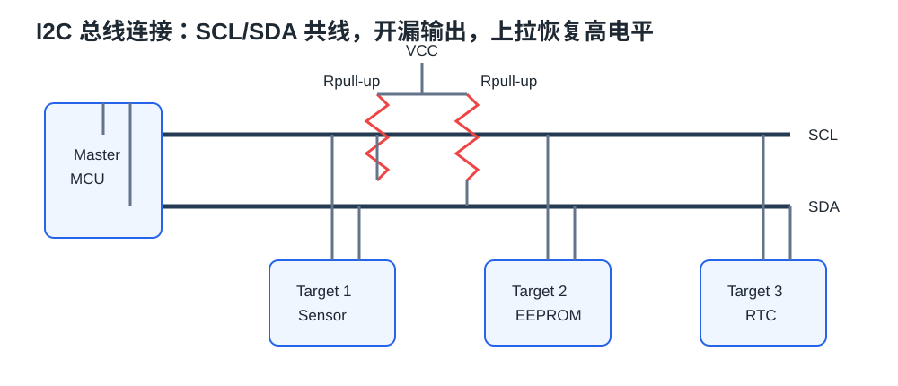
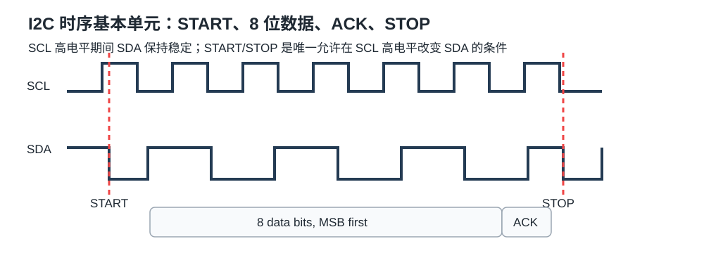
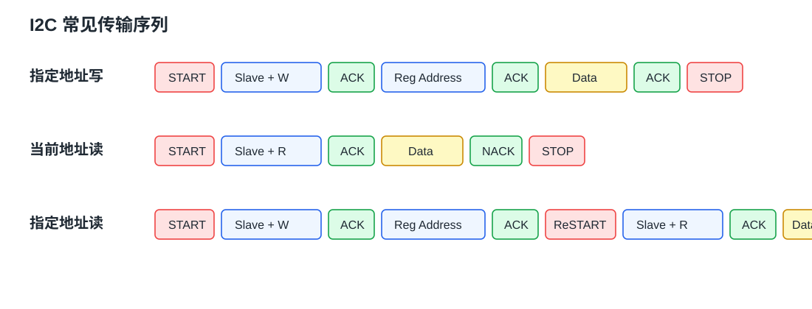

I2C / IIC¶
I2C 是 Inter-Integrated Circuit 的缩写，也常写作 IIC，是 Philips 开发的一种通用数据总线。它只需要 SCL 和 SDA 两根通信线，适合 MCU 挂接多个低速外设，例如 OLED、EEPROM、RTC、MPU6050、温湿度传感器和电源管理芯片。
1. 协议定位¶
| 协议 | 引脚 | 双工 | 时钟 | 电平 | 设备关系 |
|---|---|---|---|---|---|
| USART | TX、RX |
全双工 | 异步 | 单端 | 点对点 |
| I2C | SCL、SDA |
半双工 | 同步 | 单端开漏 | 多设备 |
| SPI | SCK、MOSI、MISO、SS |
全双工 | 同步 | 单端 | 多设备 |
| CAN | CAN_H、CAN_L |
半双工 | 异步 | 差分 | 多设备 |
I2C 的特点：
- 两根线：
SCL是时钟线，SDA是数据线。 - 同步通信：时钟由主机提供。
- 半双工：同一根
SDA线上分时发送和接收。 - 带数据应答：每 8 bit 后有 ACK/NACK。
- 支持多设备：一主多从、多主多从都可以。
2. 硬件连接¶
所有 I2C 设备的 SCL 连在一起，SDA 连在一起。设备的 SCL/SDA 引脚需要配置成开漏输出，外部各加一个上拉电阻。

课件中的硬件要点：
SCL和SDA都要上拉。- 上拉电阻常用
4.7 kΩ左右。 - 总线空闲时，两根线都应为高电平。
- 器件只能主动拉低总线，不能主动输出高电平。
开漏加上拉的意义：
- 避免多个设备同时输出不同电平造成短路。
- 支持 ACK、仲裁和时钟拉伸。
- 释放总线时由上拉电阻恢复高电平。
3. 角色和地址¶
I2C 通信中常见角色：
- 主机：产生
SCL，发起 START/STOP，指定目标地址。 - 从机：被地址选中后，在主机时钟节拍下收发数据。
常见地址模式：
- 7 位地址：最常见。
- 10 位地址：STM32 硬件 I2C 支持，但普通模块较少使用。
很多芯片手册会同时出现 7 位地址和 8 位读写地址：
7-bit address: 0x68
write address: 0xD0 = 0x68 << 1 | 0
read address: 0xD1 = 0x68 << 1 | 1
MPU6050 课件示例：
AD0 = 0：I2C 从机地址1101000AD0 = 1：I2C 从机地址1101001
4. 时序基本单元¶

关键规则：
- START：
SCL高电平期间，SDA从高变低。 - STOP：
SCL高电平期间，SDA从低变高。 - 数据变化：只能在
SCL低电平期间改变SDA。 - 数据采样：接收方在
SCL高电平期间读取SDA。 - 数据顺序：高位先行，通常先发
B7，最后发B0。
读这张时序图时，重点看三个时间关系：
tSU;STA和tHD;STA描述 START 条件前后的建立/保持时间。tSU;DAT和tHD;DAT描述数据位在采样前后需要保持稳定的时间。tSU;STO描述 STOP 条件成立前SDA需要满足的建立时间。
图 2 同时包含 START 和 STOP：START 是 SCL 高电平期间 SDA 从高变低；STOP 是 SCL 高电平期间 SDA 从低变高。
5. 发送一个字节¶
发送一个字节的过程：
SCL低电平期间，发送方把数据位放到SDA。- 发送方释放或拉高
SCL。 - 接收方在
SCL高电平期间读取该 bit。 - 重复 8 次，从高位到低位。
- 发送方释放
SDA，等待接收方在第 9 个时钟给 ACK/NACK。
SCL 高电平期间 SDA 不允许随意变化，否则可能被解释为 START 或 STOP。
6. 接收一个字节¶
接收一个字节时，方向反过来：
- 主机释放
SDA。 - 从机在
SCL低电平期间把数据位放到SDA。 - 主机在
SCL高电平期间读取。 - 8 bit 后，主机发送 ACK 或 NACK。
接收之前释放 SDA 很关键。如果主机一直拉低 SDA，从机无法发送高电平。
7. ACK 和 NACK¶
每 8 bit 数据后，第 9 个时钟用于应答。
| SDA 电平 | 含义 |
|---|---|
| 0 | ACK，应答 |
| 1 | NACK，非应答 |
典型场景：
- 主机发送地址后，从机拉低
SDA表示地址匹配并 ACK。 - 主机发送数据后，从机 ACK 表示接收成功。
- 主机读取最后一个字节后发送 NACK，表示不再继续读取。
如果地址后直接 NACK，优先检查地址、上拉、电源、接线和地址选择脚。
8. 典型传输序列¶

图 3 直接对应课件中的三类典型时序。地址和数据都按 8 位一组传输，每组后面跟 1 位 ACK/NACK。
指定地址写¶
START
Slave Address + W
ACK
Reg Address
ACK
Data
ACK
STOP
用途：对指定从机的指定寄存器写入数据。
当前地址读¶
START
Slave Address + R
ACK
Data
NACK
STOP
用途：从从机当前内部地址指针读取数据。
指定地址读¶
START
Slave Address + W
ACK
Reg Address
ACK
Repeated START
Slave Address + R
ACK
Data
NACK
STOP
Repeated START 的作用是不释放总线，同时让从机保持刚设置好的寄存器地址指针。
9. STM32 硬件 I2C¶
课件对 STM32 I2C 外设的描述：
- 硬件自动执行时钟生成、起始终止条件生成、应答位收发和数据收发。
- 支持多主机模型。
- 支持 7 位和 10 位地址模式。
- 标准速度最高
100 kHz。 - 快速速度最高
400 kHz。 - 支持 DMA。
- 兼容 SMBus 协议。
- STM32F103C8T6 硬件 I2C 资源：
I2C1、I2C2。
基本结构：
PCLK -> 时钟控制器 -> SCL
数据寄存器 DR <-> 移位寄存器 <-> SDA
GPIO 开关控制 -> SCL/SDA 复用输出
10. 软件 I2C 与硬件 I2C¶
| 方式 | 优点 | 缺点 |
|---|---|---|
| 软件模拟 I2C | 逻辑直观、引脚灵活、便于教学 | 占用 CPU，速度不高 |
| 硬件 I2C | 自动产生时序、效率高、支持 DMA | 状态机复杂，错误处理更麻烦 |
初学建议先理解软件模拟 I2C，因为它能帮助你真正看懂 START、STOP、ACK、读写方向和释放 SDA。
11. 上拉电阻和速度¶
上拉电阻与总线电容决定上升沿速度。
- 上拉太大：上升沿慢，高速下容易采样错误。
- 上拉太小：低电平电流大，功耗增加，器件拉低能力可能不足。
经验：
- 单板短线、100 kHz：
4.7 kΩ常见。 - 400 kHz 或节点较多：可能需要
2.2 kΩ到3.3 kΩ。 - 多个模块都带上拉时，要计算并联后的等效电阻。
12. 调试 checklist¶
- 空闲时
SCL/SDA是否都是高电平。 - 是否存在上拉电阻。
- GPIO 是否配置为开漏输出或复用开漏。
- 地址是 7 位还是 8 位。
- START 后地址阶段是否 ACK。
- 读寄存器是否使用 Repeated START。
- 读数据前主机是否释放
SDA。 SDA是否只在SCL低电平变化。- 总线速度是否超过从机支持。
- 多模块并联时上拉是否过强或过弱。
参考资料¶
STM32入门教程.pptx：I2C 通信、硬件电路、时序基本单元、典型读写、STM32 I2C 外设相关页。- NXP UM10204: I2C-bus specification and user manual
- Analog Devices AN-1159: I2C-Compatible Interface Timing Specifications and Communication Protocol
- Texas Instruments SLVA689: I2C Bus Pullup Resistor Calculation